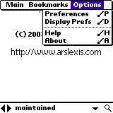

| |
Products | Downloads | Buy | Documentation | News | Support |
|
Noah Pro comes in a noah_pro.zip file that contains:
| Upon startup Noah Pro displays by default About screen. This behavior can be changed via Startup action preference. |
Starting to type a word or pressing the spyglass icon brings the screen with list of words. The list will automatically scroll to the nearest word matching entered text. List can also be navigated in following ways:
Pressing Cancel button returns to main screen. |
 Tapping on a word or pressing "return" (in Graffiti it's a move from
upper right to lower left corner) brings word definition. If a definition
doesn't fit on one screen it can be scrolled using hardware up/down buttons,
scrollbar or 5-Way Navigator's up/down buttons (available e.g. on Treo
or Tungsten). You can either scroll by line, half a page or the whole page
(depending on preferences).
Tapping on a word or pressing "return" (in Graffiti it's a move from
upper right to lower left corner) brings word definition. If a definition
doesn't fit on one screen it can be scrolled using hardware up/down buttons,
scrollbar or 5-Way Navigator's up/down buttons (available e.g. on Treo
or Tungsten). You can either scroll by line, half a page or the whole page
(depending on preferences).You can move to next/previous word by using left/right arrows. |
 Tapping twice directly on the word brings its definition.
Tapping twice directly on the word brings its definition.
|
| A history of recently looked up words is available by using pop-up list located next to a spyglass icon. |
Noah Pro Main menu:
|
 Noah Pro Options menu:
|

 Noah Pro allows bookmarking words for future reference, deleting bookmarks and
selecting a word from the list of bookmarked words. When viewing bookmarks, they
can be sorted alphabetically (by name) or chronologically (by the time they were
bookmarked, the most recently bookmarked words at the top).
Noah Pro allows bookmarking words for future reference, deleting bookmarks and
selecting a word from the list of bookmarked words. When viewing bookmarks, they
can be sorted alphabetically (by name) or chronologically (by the time they were
bookmarked, the most recently bookmarked words at the top).
|
| It's possibly to copy a part of definition to clipboard and use it in other application. To do that, select a part of definition to copy with a stylus and select "Main\Copy to clipboard" menu item. If there is no selection, the whole definition gets copied. You can then paste copied text in other applications that support clipboard (e.g. Memo Pad). |
Noah Pro implements resident mode which allows direct lookup of word definition from many applications. Example below is based on built-in Palm OS Memo Pad application. To lookup words directly from another application:
Due to Palm OS' limitations, resident mode offers only partial functionality compared to when Noah is run as a stand-alone application.
Startup action preference defines what happens when Noah Pro
start:
|
When more than one database is installed, Startup database preference defines which database
should be selected at startup:
|
Up/Down buttons and 5-Way buttons preferences
define how a word definition should be scrolled when using up/down hardware
buttons or tapping on the screen:
|
 Definition display is highly customizable. There are 3 different layout to
choose from. Font and color of each part of every layout can be changed.
Definition display is highly customizable. There are 3 different layout to
choose from. Font and color of each part of every layout can be changed.
|
|
Noah Pro can read databases in both internal memory and external memory such
as SD/MMC card or Memory Stick. Noah Pro will scan all
files on external memory card looking for databases.
If there are a lot of files on the card, this process takes a lot of time
so it's only being done once, when program is being run for the first time.
If you install the database after that, you need to explicitly tell Noah
Pro to find databases on external memory card. To do that select menu "Main\Select
database". You'll see the following screen. Pressing "Find database" will
re-scan files on external memory card to find a database. In order to use
a given database, tap on the name to highlight it and press "Select" button.
Pressing "Cancel" will return to the main screen without making any changes. |
 If upon startup Noah Pro shows "Cannot find database. Please see manual
for more information." error message it usually means that the dictionary
database file (full.pdb or medium.pdb) has
not been installed on the device. Please verify that the file is present either
in internal memory or on external memory card such as SD/MMC card or Memory
Stick.
If upon startup Noah Pro shows "Cannot find database. Please see manual
for more information." error message it usually means that the dictionary
database file (full.pdb or medium.pdb) has
not been installed on the device. Please verify that the file is present either
in internal memory or on external memory card such as SD/MMC card or Memory
Stick.
|